ՃԱՆԱՊԱՐՀԱՅԻՆ ԳԾԱՆՇՈՒՄ, ԿԱՆԳԱՌ, ԿԱՅԱՆՈՒՄ:
1․ Ո՞ր տրանսպորտային միջոցներին է թույլատրվում կայանումը։
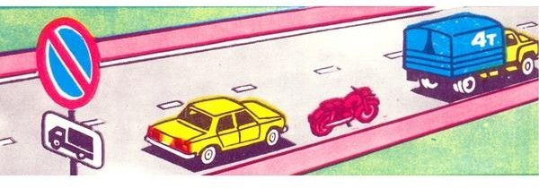
2․ Կայանումն արգելվում է՝
3․ Թույլատրվու՞մ է արդյոք ուղևոր իջեցնել ճանապարհի այն տեղում, որտեղ եզրաքարի վերին մակերեսին գծված է դեղին հոծ գիծ և տեղադրված է «Կանգառն արգելվում է» նշանը։

4․ Ազդու՞մ է արդյոք արգելող նշանը ճանապարհի այն հատվածի վրա, որտեղ կանգառ է կատարել վարորդը։
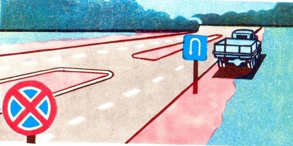
5․ Թույլատրվու՞մ է արդյոք ավտոմոբիլի կայանումը նշված տեղում։
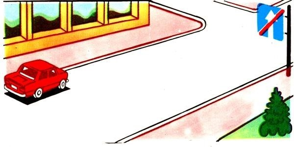
6․ Երկաթուղային գծանցներից ի՞նչ հեռավորության վրա է արգելվում տրանսպորտային միջոցների կայանումը։
7․ Թույլատրվու՞մ է արդյոք տվյալ դեպքում կանգ առնել ուղևոր իջեցնելու համար։
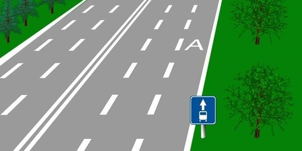
8․ Վարորդներից ո՞րն է պարտավոր կանգ առնել։
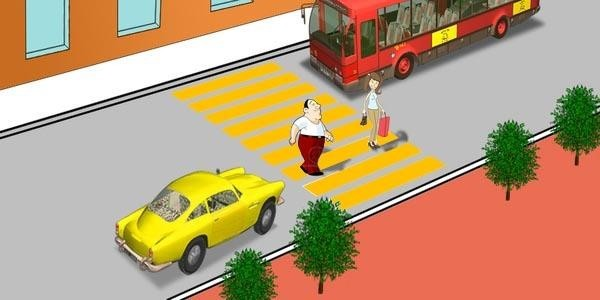
9․ Տվյալ ճանապարհային գծանշումը թույլատրում է երթևեկել`
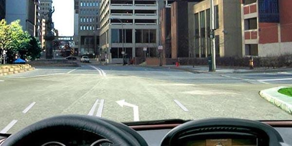
10․ Ո՞ր տրանսպորտային միջոցներին է թույլատրվում կայանել տվյալ ճանապարհային նշանի ազդեցության գոտում։
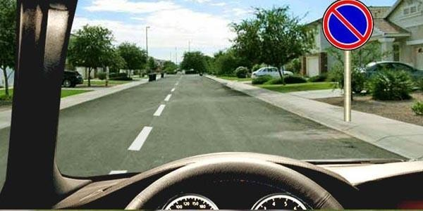
11․ Ի՞նչ է նշանակում տվյալ ճանապարհային գծանշումը։
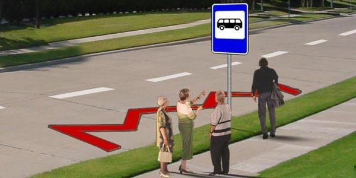
12․ Ի՞նչ է ցույց տալիս հորիզոնական գծանշման դեղին հոծ գիծը։
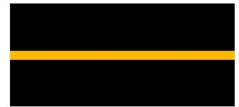
13․ Թույլատրվու՞մ է արդյոք վարորդին հատել տրանսպորտային միջոցների կայանման տեղերի սահմանները նշող գծանշման հոծ գիծը։
14․ Սլաքներով նշված ո՞ր ուղղություններով է թույլատրվում երթևեկությունը։
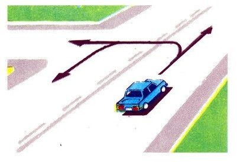
15․ Ի՞նչ է ցույց տալիս այս գծանշումը։
16․ Քանի՞ գոտի ունի ճանապարհը, որտեղ հանդիպակաց ուղղությունների տրանսպորտային հոսքերը բաժանվում են կրկնակի հոծ գծերով։
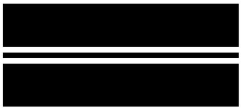
17․ Ի՞նչ են նախազգուշացնում երթևեկելի մասի վրա գծանշված սլաքները։
18․ Գծանշման այս գծերից ո՞րն է օգտագործվում դարձափոխային երթևեկությամբ գոտիները նշելու համար։
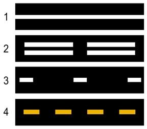
19․ Որտե՞ղ է գծվում կանգառը և կայանումն արգելող տեղերը նշող դեղին հոծ գիծը։

20․ Ճանապարհային նշաններից որի՞ հետ կարող է կիրառվել դեղին գույնի ընդհատվող գծանշումը։
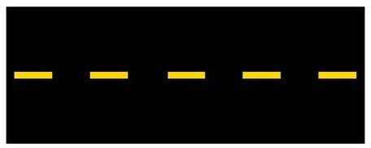
21․ Ո՞ր տրանսպորտային միջոցներին է թույլատրվում երթևեկել երթևեկելի մասի աջ գոտիով։
22․ Այս ճանապարհային գծանշումն ունի հետևյալ նշանակությունը։
23․ Այս հորիզոնական ճանապարհային գծանշումը ցույց է տալիս՝
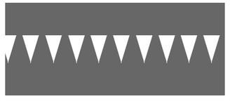
24․ Թույլատրվու՞մ է արդյոք մուտք գործել սպիտակ լայն գծերով գծանշված ուղղորդ կղզյակ։
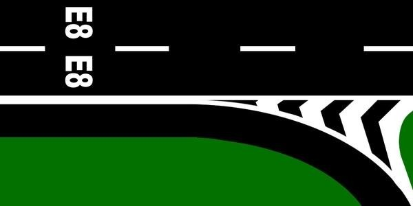
25․ Ինչպե՞ս պետք է վարվի վարորդը՝ մոտենալով խաչմերուկին՝ «Կանգ - գիծ» գծանշման և լուսացույցի կանաչ ազդանշանի պայմաններում։
26․ Ի՞նչ է ցույց տալիս այս գծանշումը։
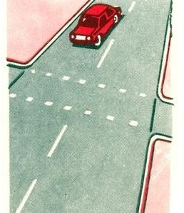
27․ Վարորդը որտե՞ղ պետք է կանգնեցնի տրանսպորտային միջոցն այս գծանշման առկայության դեպքում։

28․ Ի՞նչ է նշանակում այս գծանշումը։
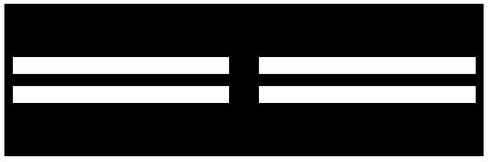
29․ Թույլատրվու՞մ է արդյոք նշված վայրում հետադարձ կատարել։
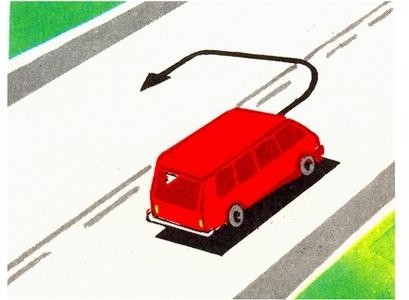
30․ Թույլատրվու՞մ է արդյոք տվյալ գծանշման առկայության դեպքում զբոսաշրջության երթուղով երթևեկող ավտոբուսի վարորդին մուտք գործել «A» գծանշումով գոտի։
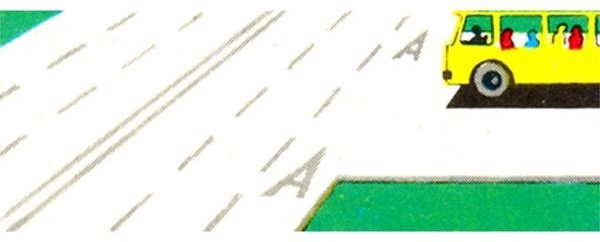
31․ Ի՞նչ է ցույց տալիս ընդհատվող լայն գծի տեսքով գծանշումը։
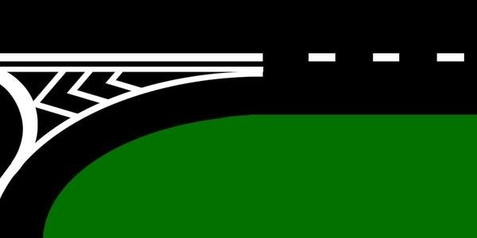
32․ Ո՞ր ավտոմոբիլին է թույլատրվում կանգառ կատարել այս նշանների ազդման գոտում։
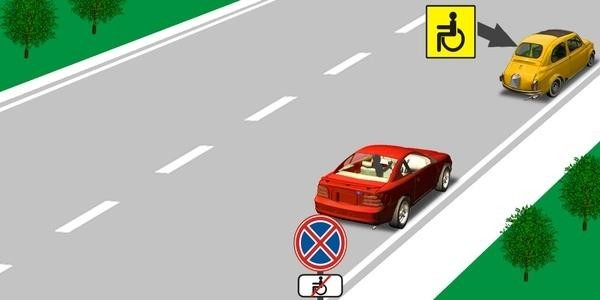
33․ Ո՞ր նկարում է վարորդը ճիշտ կատարել կանգառ` ուղևորներ իջեցնելու համար։
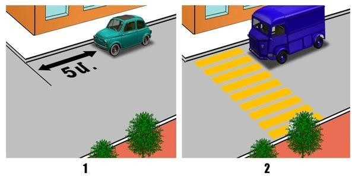
34․ Որպես գնացքի կանգառի ազդանշան ծառայում է՝
35․ Բնակավայրերում, յուրաքանչյուր ուղղությամբ մեկ երթևեկելի գոտի ունեցող և մեջտեղում տրամվայի գծեր չունեցող ճանապարհների ձախ կողմում կանգառն ու կայանումը՝
36․ «Կանգ-գծից» կամ «Երթևեկությունն առանց կանգառի արգելվում է» նշանից ի՞նչ հեռավարության վրա պետք է կանգնեցվի տրանսպորտային միջոցը՝ մոտեցող գնացքին ճանապարհը զիջելու համար։
37․ Թույլատրվու՞մ է արդյոք կանգառը նշված տեղում։
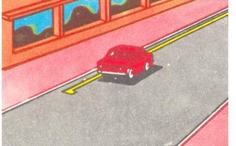
38․ Թույլատրվու՞մ է արդյոք ավտոմոբիլի կանգառն այս վայրում։
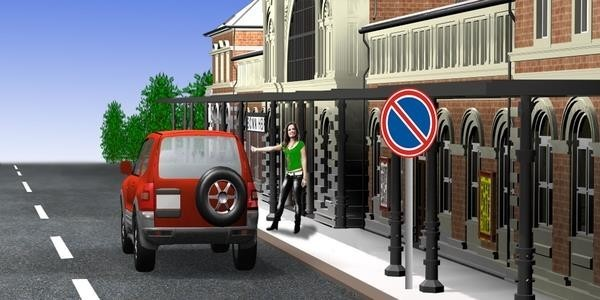
39․ Ո՞ր տրանսպորտային միջոցի վարորդն է խախտել կայանման կանոնները։
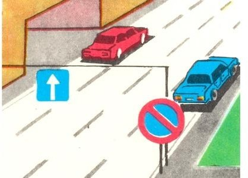
40․ Որտե՞ղ է թույլատրվում երկարատև հանգստի, գիշերակացի և այլ նպատակներով կայանելը բնակավայրերից դուրս։
41․ Կանգառն արգելվում է, եթե հոծ գծի և կանգնած տրանսպորտային միջոցի միջև տարածությունը կազմում է`
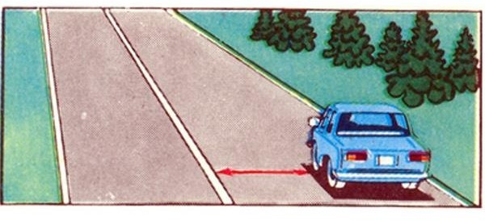
42․ Եթե երկաթուղային գծանցով երթևեկությունը արգելված է և բացակայում են լուսացույցը, ճանապարհային նշանները, գծանշումն ու ուղեփակոցը, ապա վարորդը պետք է կանգնի՝
43․ Ի՞նչ հեռավորության վրա է արգելվում տրանսպորտային միջոցների կայանումը երկաթուղային գծանցներից՝
44․ Ո՞ր պատասխանում են ճիշտ թվարկած կանգառի կանոնները խախտած վարորդները։
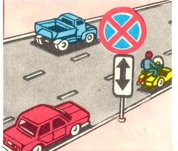
45․ Ո՞ր տրանսպորտային միջոցների վարորդներն են սխալ կանգառ կատարել ուղևորներ իջեցնելու համար։
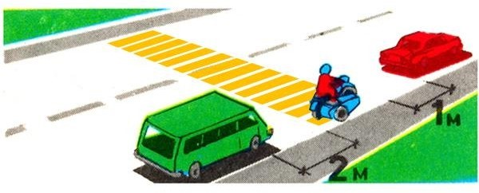
46․ Եթե երկաթուղային գծանցով երթևեկությունն արգելված է և բացակայում են լուսացույցը, ճանապարհային նշաններն ու գծանշումը, ապա վարորդը պետք է կանգնի՝
47․ Թույլատրվու՞մ է զբոսաշրջային ավտոբուսին երթևեկել «A» գծանշումով գոտիով։
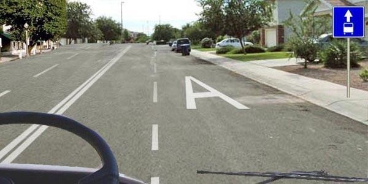
48․ Ի՞նչ է նշանակում երթևեկելի մասի գոտում գծանշված «A» տառը։
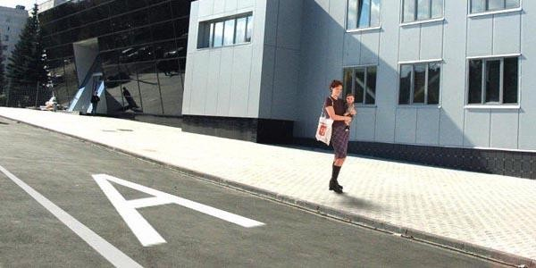
49․ Տրանսպորտային միջոցին թույլատրվու՞մ է կանգնել նշված տեղում ուղևորներ իջեցնելու համար։
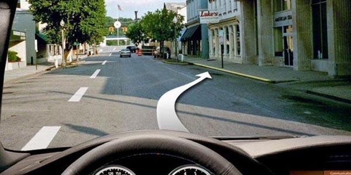
50․ Թույլատրվու՞մ է շարունակել երթևեկությունը սլաքով նշված ուղղությամբ։
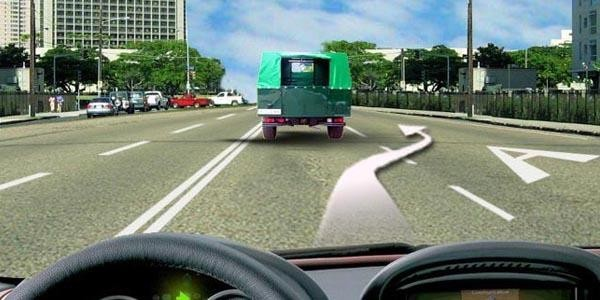
51․Այսպիսի ուղղաձիգ գծանշմամբ նշվում են`
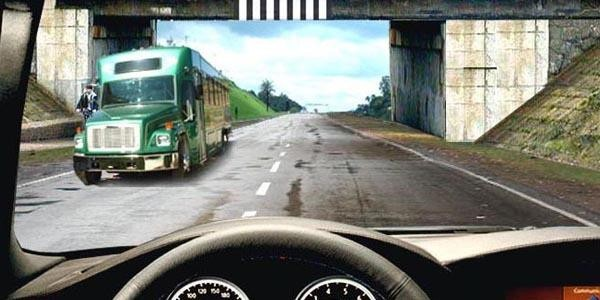
52․ Ինչպե՞ս պետք է վարվի թեթև մարդատար ավտոմոբիլի վարորդը, եթե ավտոբուսի վարորդը սկսել է արգելակել։
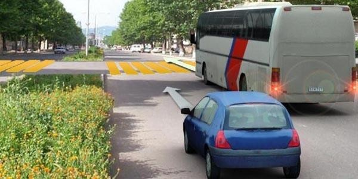
53․ Ավտոբուսի վարորդը կատարել է կանգառ ուղևորներ նստեցնելու նպատակով։ Թեթև մարդատար ավտոմոբիլը երթևեկում է 70 կմ/ժ արագությամբ։ Ո՞ր տրանսպորտային միջոցի վարորդն է խախտում ճանապարհային երթևեկության կանոնների պահանջները։
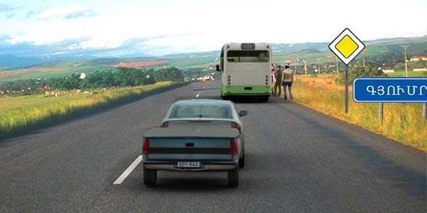
54․ Թվարկվածներից ո՞ր դեպքում կարող է ավտոբուսի վարորդն անցնել երկկողմ երթևեկության եռագոտի ճանապարհի մեջտեղի գոտի, որը օգտագործվում է երկու ուղղությամբ երթևեկության համար։
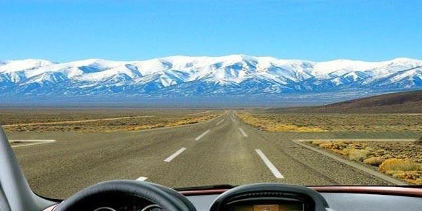
55․ Որտե՞ղ պետք է կանգ առնի վարորդը տվյալ իրավիճակում։
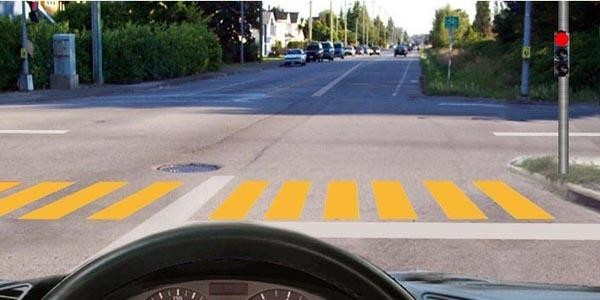
56․ Ավտոբուսը կանգ է առել հետիոտնին զիջելու համար։ Թեթև մարդատար ավտոմոբիլի վարորդը տվյալ իրադրությունում խախտու՞մ է ճանապարհային երթևեկության կանոնների պահանջները։
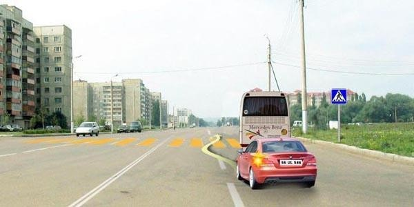
57․ Դեպի ձախ երթևեկությունը շարունակելու համար որտե՞ղ պետք է կանգ առնի ավտոբուսի վարորդը ճանապարհը թեթև մարդատար ավտոմոբիլին զիջելու համար։
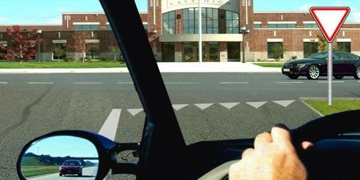
58․ Տվյալ իրավիճակում որտե՞ղ պետք է կանգ առնել։
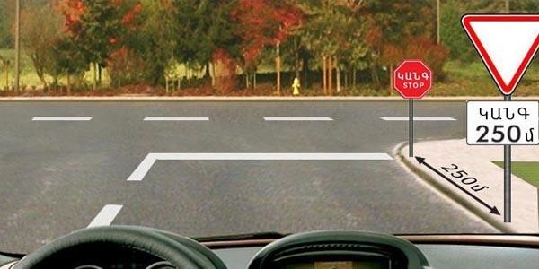
59․ Զբոսաշրջային ավտոբուսի վարորդը երկարատև հանգստի նպատակով իրավունք ունի՞ կանգ առնել նշված վայրում։
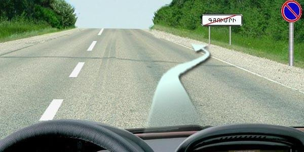
60․ Թույլատրվու՞մ է կանոնավոր ուղևորափոխադրումներ իրականացնող ավտոբուսի վարորդին ուղևորներ նստեցնելու նպատակով կանգառ կատարել նշված վայրում։
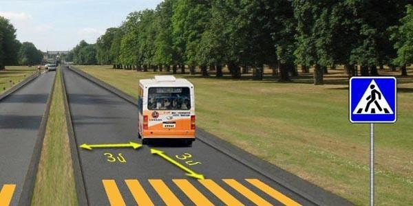
61․ Տվյալ նշանի ազդեցության գոտում ո՞ր տրանսպորտային միջոցներին է թույլատրվում կանգառ կատարել։
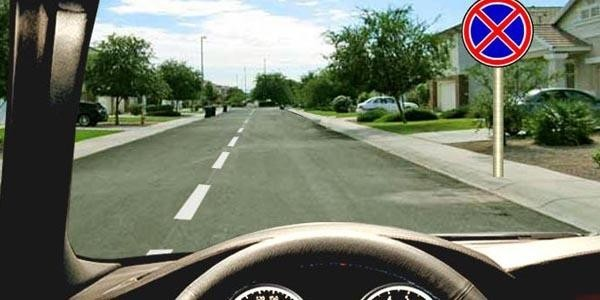
62․ Նշված ճանապարհային նշանների ազդման գոտում թույլատրվու՞մ է կանգառ կատարել, ուղևորներ նստեցնելու նպատակով։
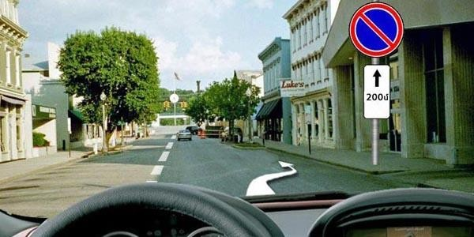
63․ Ո՞ր տրանսպորտային միջոցների համար է առանձնացված «A» տառով գծանշված գոտին։
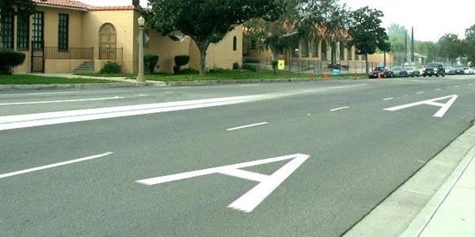
64․ Թույլատրվու՞մ է ավտոբուսների կանգառն ու կայանումը բնակավայրերում երթևեկելի մասի ձախ կողմում` միակողմ երթևեկության ճանապարհներին։
65․ Կանգառի կետերի տարածքից դուրս թույլատրվու՞մ է ընդհանուր օգտագործման տրանսպորտային միջոցներին կանգառ կատարել։
66․ Թույլատրվու՞մ է ավտոբուսների կայանումը բնակելի գոտիներում և բակային տարածքներում։
67․ Թո՞ւյլատրվում է կանգառը նշված վայրում
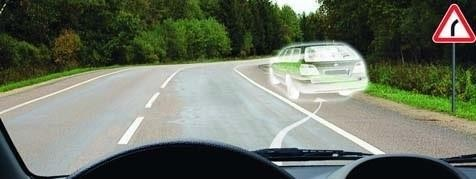
68․ Թույլատրվո՞ւմ է կայանումն այս իրավիճակում
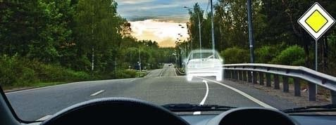
69․ Նշվածներից, ո՞ր վայրում է թույլատրվում կանգառ կատարել
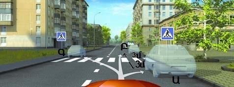
70․ Ո՞ր վայրում է թույլատրվում կանգառ կատարել
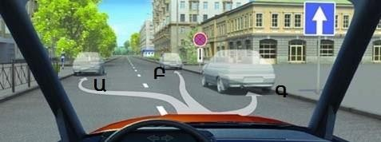
71․ Թո՞ւյլատրվում է կանգառ կատարել նշված վայրում
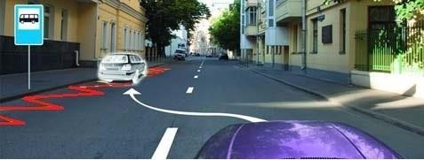